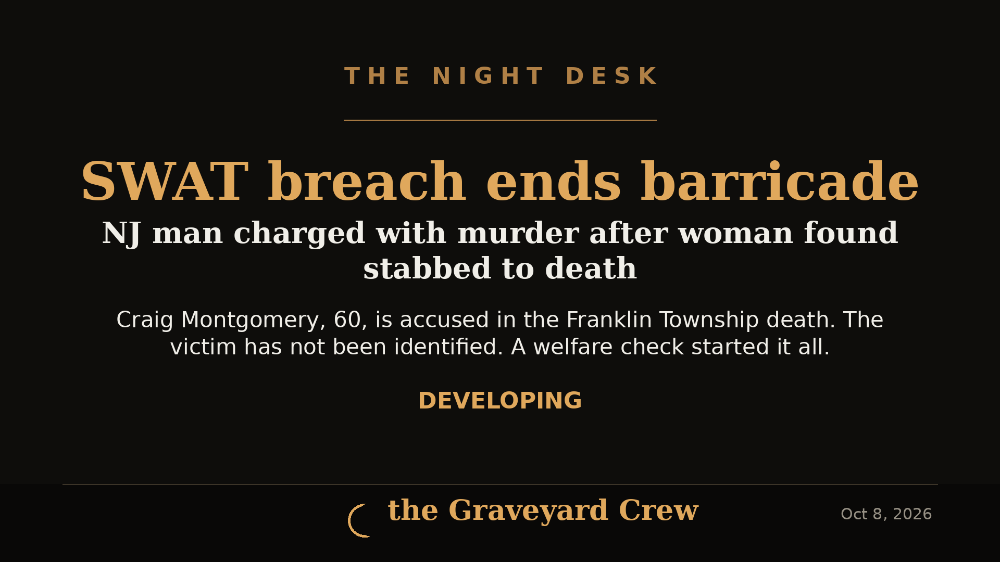

October 08, 2026
Barricade ends in murder charge: NJ man accused in stabbing death after overnight standoff

Headline card by The Night Desk
Barricade ends in murder charge: NJ man accused in stabbing death after overnight standoff
FRANKLIN TOWNSHIP, N.J. — A 60-year-old township man is facing murder charges after a hours-long barricade at a Majesty Lane home ended with a SWAT team breach and the discovery of an adult woman stabbed to death inside.
Craig Montgomery, 60, has been charged with murder and possession of a weapon for an unlawful purpose, according to Somerset County Prosecutor John McDonald.
What happened
It started as a welfare check. Franklin Township police got a 911 call requesting a check on the home at 10:11 p.m. Tuesday, Oct. 6. Officers showed up, tried several times to reach the residents, and got nothing back.
A second welfare-check call brought police back to the house. This time they encountered Montgomery, who told officers he had a knife and was barricaded inside.
SWAT breach
Franklin Township police called in the Somerset County SWAT team, which arrived around 1:50 a.m. Wednesday, Oct. 7. SWAT officers breached a sliding door and went in — and, according to the prosecutor, Montgomery charged at them with a knife. The team subdued him and took him into custody.
Once the scene was secure, officers searched the home and found an adult woman dead with apparent stab wounds to her chest.
What we don't know yet
- The victim has not been publicly identified. An autopsy by the New Jersey Northern Regional Medical Examiner's Office is expected to positively identify her and determine the cause and manner of death.
- A second person was inside the home and is unharmed.
- Montgomery was taken to a local hospital for evaluation and treatment of minor injuries. He is expected to be transferred to the Somerset County Jail upon release.
The investigation is ongoing. Anyone with information is asked to contact the Somerset County Prosecutor's Office Major Crimes Unit at 908-231-7100, the Franklin Township Police Department at 732-873-5533, or the anonymous Somerset County Tip Line at 888-577-TIPS (8477).
Source: MyCentralJersey.com (USA Today Network)
Source: MyCentralJersey.com (USA Today Network) — read the original report
← Back to latest stories